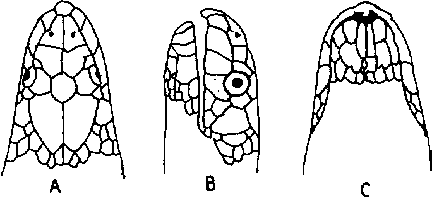

|
Digitized Inventory of Animal Resources: Reptilia ( Snakes ) Principal Investigator: Dr. R. J. B Alfred, Co-Investigator: Dr. Rama Krishna, Contributed by:
Dr. R.C.Sharma |
Enhydrina schistosa (Daudin 1803)
Taxonomic
Details
----- Scientific Name
----- Classification
----- Synonyms
----- Common Names
Other
Biological Details
----- Habit and
Habitat
----- Distribution
---------- Extent of
Occurrence
---------- Area of occurrence
---------- Altitude
---------- Population
-----
Conservation Status
-----
Diagnostic
Features
-----
Breeding system
Miscellaneous
Information
Literature
Genus . Enhydrina Gray 1849
This monotypic genus includes the deadly poisonous snakes with elongated, compressed body; head shields are entire; nostrils are superior, nasal shields are in contact with one another; mental shield is narrow, some what elongated, partly concealed in a groove in the symphysis, maxillary bone never extends anteriorly beyond the palatine (it reaches as far as the palatine); poison fangs are followed after an interval by 3 or 4 teeth; body scales are imbricate or subimbricate, in 49-66 rows at the thickest part of the body; ventral shields are distinct throughout, a little broader than the adjacent scales; hemipenis is forked for about half its length, the tip of the hemipenis bears coarse, flattened, papilla- like structure arranged in longitudinal series; the rest of the organ is with moderately large, closely set spines which are slightly larger towards the base.
Scientific Name : Enhydrina schistosa (Daudin 1803)
Family :
Classification: Genus . Enhydrina Gray 1849
Synonyms:
Common Names:
Distribution:
Altitude:
Conservation status: Fairly Common
In addition to the characters as given under the genus the following more are worth consideration : These snakes reach to a maximum length of about 1580 mm. (generally the snakes are about 1100-1200 mm. in length); eyes are moderately large. Dorsal colouration is gray or grayish with a bluish tinge; with dark-gray or black annulation, which are broadest on the dorsum; ventrum is whitish. This colour pattern is most conspecious in juveniles and as the age increase all the markings vanish or become faint and the complete snake becomes uniform gray. 40-52 scales rows on the neck in males, 42-55 in females; 49-60 on the body in males, 51-66 in females; the body scales are imbricate or subimbricate, with a short central keel; ventral shields are from 239-354 (generally 239-322), distinct throughout; slightly broader than the adjoining scales; preanal shields are feebly enlarged.
Breeding Biology : Back to Top

Enhydrina schistosa (Daudin)
: Head : A. Dorsal view B. Lateral view C. Ventral view